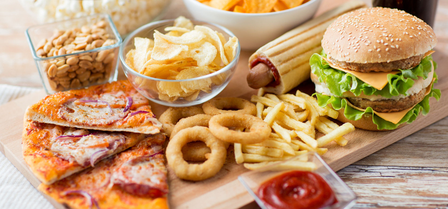

Welkom in mijn museum
Welkom in mijn museum! In dit digitale museum ontdek je mijn favoriete eten van over de hele wereld. Elk thema laat een ander soort gerecht zien dat ik lekker vind, met afbeeldingen en informatie. Van zoete snacks tot hartige maaltijden, hier kan je alles terugvinden wat ik graag eet. Neem een kijkje en laat je inspireren!
